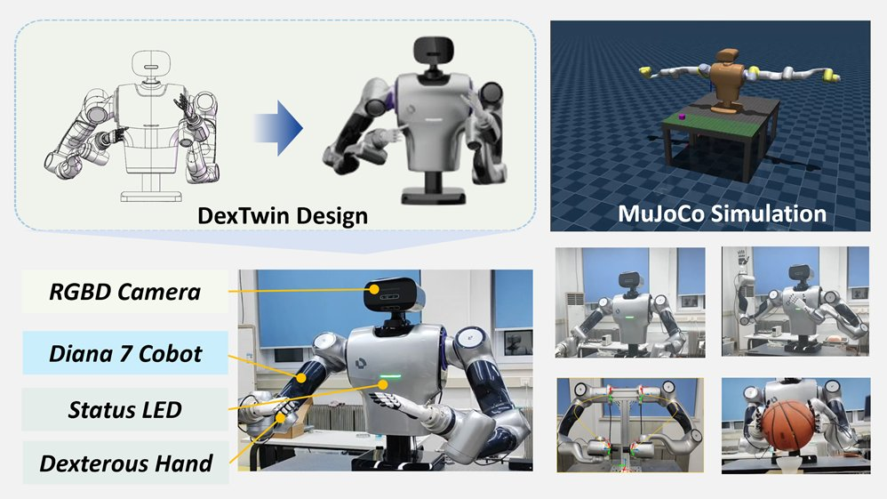

Source code
The repository is the main technical reference for this project. The available portfolio materials do not include a quantified evaluation or a detailed breakdown of individual contributions.
DexTwin Unity

The repository is the main technical reference for this project. The available portfolio materials do not include a quantified evaluation or a detailed breakdown of individual contributions.